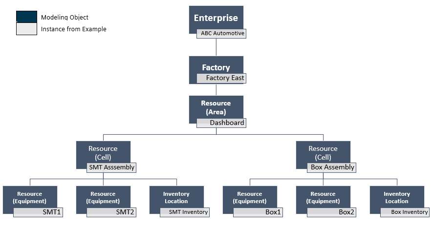

Configuring a Factory Hierarchy
A Factory Hierarchy represents a physical manufacturing environment as a pyramid of related modeling object instances. No “Factory Hierarchy” modeling object exists. The hierarchy becomes defined by configuring parent-child relationships among instances of the following objects:
| • | Enterprise |
| • | Factory |
| • | Inventory Location (available if Industry Solutions is installed) |
| • | Resource |
| Important: | The Resource modeling object contains a field called Factory Level. This field enables you to configure a resource as a factory area or sub-area rather than as equipment. |
A fictional enterprise named ABC Automotive has a factory called Factory East. This factory has a dashboard manufacturing area with two manufacturing lines, each of which has equipment resources and a dedicated inventory location.
This diagram graphically depicts modeling of the example configuration.

These are the steps to configure the example hierarchy diagrammed above:
| 1. | Define an Enterprise named ABC Automotive. |
| 2. | Define a Factory and set the Enterprise to ABC Automotive. |
| 3. | Define a Resource named Dashboard with a Factory Level of Area. Set the Factory to Factory East. |
| 4. | Define a Resource named SMT Assembly with a Factory Level of Cell. Set the Parent Resource to Dashboard. |
| 5. | Define a Resource named Box Assembly with a Factory Level of Cell. Set the Parent Resource to Dashboard. |
| 6. | Define SMT equipment resources with a Factory Level of Equipment. Set the Parent Resource to SMT Assembly. |
| 7. | Define Box equipment resources with a Factory Level of Equipment. Set the Parent Resource to Box Assembly. |
| 8. | Define an Inventory Location named SMT Inventory. Set the Parent Resource to SMT Assembly. |
| Note: | This step assumes Industry Solutions is installed. |
| 9. | Define an Inventory Location named Box Inventory. Set the Parent Resource to Box Assembly. |
| Note: | This step assumes Industry Solutions is installed. |
The results of this configuration become apparent when you select the enterprise on the Factory Hierarchy tree in the Factory Hierarchy page.
The Factory Hierarchy page layout includes a panel on the left displaying the Factory Hierarchy as a tree. Selections on the tree determine the modeling page displayed to the right of the panel.
Factory Hierarchy Tree Icons

Expanding and Collapsing the Tree
Initially, the tree is collapsed at the top level, which is Enterprise. Clicking a right-facing arrow preceding an item expands the tree to show the immediate children of the item. Click a down-facing arrow preceding an item collapses the item. The icon with the opposing diagonal arrows enables you to expand all l levels of the tree or to collapse the tree to the Enterprise level.
Importing a Legacy Valor MDM XML File
The Import button allows you to import an XML file containing information such as factory lines, machines and equipment to the Area factory level which can be used to create a factory hierarchy modeling instance as well as configuring the SRC Settings. The button is hidden by default and will only be shown when selecting an Area in the tree. Clicking other modeling objects after selecting an Area will hide the import button.
When the Import button is clicked, you will be prompted to select the file to import. Once the file has been selected, an Import Details pop-up is displayed showing a preview of the items contained in the import file. The items consist of Lines and Equipment and will be imported into Opcenter Execution as Resource instances.
You can select the items that you wish to import by ticking the check box next to it. If a Resource instance with the same Name already exists in the current factory hierarchy, the check box is grayed out and a message stating "Object already exists" will be displayed next to the item.
If the Legacy Valor MDM file is successfully imported, a message indicating the service is completed is shown, and the succeeded import counts is displayed. If you try to import the same Legacy Valor MDM file containing information already exist in the current factory hierarchy, the import process will be skipped. The same completed message will be displayed but with the skipped import counts being shown instead.
If you have Industry Solutions installed, you can import a Legacy Valor MDM file containing information such as Inventory Location, resources, and Shop Floor Resources Configuration (SRC) settings to the factory level of an Area to create the appropriate Inventory Location modeling instances and SRC settings. The import process is the same as how it is done in Opcenter Execution Core, but with additional Inventory Location objects and SRC settings available for import and displayed in the Import Details Pop-Up.
If an existing SRC settings of a resource is resource or inventory location is being imported, the application will skip that object and it will be considered successful as long as the imported SRC settings are the same as the existing settings. An error will be shown if the resources have existing SRC settings but with a different Machine ID or the settings are already in use by other resources in SRC.
| Note: | You must configure the SRC API field in Shopfloor Integration Settings modeling page to enable the creation of the SRC settings in the Factory after importing the Legacy Valor MDM file. Refer to Defining Shop Floor Integration Settings for information. |
Importing a JSON Export File from SRC
In addition to importing XML files from the Legacy Valor MDM application, it is also possible to import JSON files from SRC. While the Legacy Valor MDM files are restricted to importing an Area and resources below it, the SRC imports may contain any or all of the full factory structure: Enterprise, Factory, Area, Cells, and Equipment.
Searching the Tree
You can search the tree by entering text into the search field and pressing the enter key or clicking the search icon.
Editing Tree Items
Clicking the name of an item on the tree opens the item in the modeling page area to the right of the tree. Changes made in the modeling area are immediately reflected in the tree. For example, if you add a child to an item, it appears in the menu under its parent.
Add New Item
This add new item icon  appears to the far left of the search bar. It enables you to do two things:
appears to the far left of the search bar. It enables you to do two things:
| • | Add a modeling instance with the same factory level and parent as an existing item on the tree. |
| • | Add a child to an existing item on the tree. |
A context menu of Factory Hierarchy levels appears after an item is selected and the copy level icon is clicked. Levels listed on the context menu include the level of the selected item itself as well as child level if one exists. If a level is selected from the context menu, the application loads a blank instance in the modeling area with the appropriate Factory Level and parent populated.
This add existing object icon enables increased functionality:
The Factory Hierarchy tree has been enhanced to allow for the addition of existing Factories with no parent Enterprise. Additionally, Resources that are not part of the Factory Hierarchy Model may also be added to the factory hierarchy as either an Area, Cell, Equipment. Selecting a Resource will automatically set the Factory/Parent Resource and Factory level. Finally, if you have installed Industry Solutions, you can also add existing Inventory Locations to the tree. For more information on how to define and assign Inventory Locations, refer to the Opcenter Execution Core Industry Solutions User Guide.